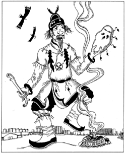

|
ОТ ЖИВОЙ
МУЗЫКИ К ЖИВОЙ ВЕРЕ

Идея проведения Республиканского фестиваля "Ycтуу-Хурээ " - от живой музыки к
живой вере - родилась в 1998 г. Что же такое Ycтуу-Хурээ?
Это
Верхне-Чаданский монастырь. Главный храм был возведен в 1905-1907 гг.
Единственный храм в Туве, построенный не из лиственницы, как все храмы, а по
тибетскому проекту со строгим соблюдением всех канонов буддийской архитектуры.
Состав раствора, из которого были вылиты стены, уникален: речной песок, рубленый
багульник, глина и яйца страуса. Даже по сегодняшним меркам это было грандиозное
строительство. Речной песок возили из долины реки "Хондергей" 9 арбанов (арбан -
десятка представителей одной семьи или рода). Багульник из верховьев реки "Алдыы
Ишкин", что в устье "Хемчика" - 6 арбанов. Глину из долины реки "Чадаан" - 3-4
арбана. А яйца экзотического страуса из пустыни Гоби - 15 арбанов. Главным
архитектором был Кундан-Эринбоочи (перерожденец) из Тибета, а оформлением
занимались мастера буддийской росписи из Китая. На тяжелых строительных работах,
в частности на размешивании раствора, работала вся знать огромного Даа. Есть
разные версии причин жесткого отбора строителей Yстуу-Хурээ. Например, такая:
личное участие в строительстве святынь очищает от негативной кармы и служит
накоплению положительной. По другой версии Верховный правитель Даа кожууна Хайдып
Угер-Даа считал справедливым привлечение именно знати и чиновников.
Ycтуу-Хурээ стал венцом буддийского строительства в Туве, самым большим и
значимым культовым сооружением Тувы.
По данным Госархива, в 1929 году в
Ycтуу-Хурээ работало 470 лам, не считая рядовых монахов. По словам очевидца, в
ежегодной церемонии принятия монашеского обета количество хуураков достигало 600.
Получается, что не менее полутора тысяч человек жило, постигало и служило Учению
Будды в этом огромном, даже по нынешним временам и меркам, комплексе, состоящем
из главного храма, шести дацанов, а также 60 юрт, которые вели все хозяйство
Ycтуу-Хурээ.
По праздничным дням окрестности Ортаа-Алаак наполнялись
божественными звуками оркестра "Бурээ-Бушкуур". Музыка из глубины веков, в
которой мощь и величие Гималаев, смирение и мудрость Тибета, и просветленность
Будды...
О чем пела та музыка?
О существах шести миров Колеса
сансары?
Об Учителях, достигших просветления?
О далеких чистых землях? О
Шамбале?
О чем плакала та музыка?
Она плакала, предвидя разрушение
храмов, пепелища от костров из священных книг и кровь учителей?
Отговаривала,
заклинала наших отцов и дедов, призывая их к добру, свету, учению, мудрости и
любви?
Что созерцали боги и духи, вызванные той музыкой?
Созерцали,
предвидя возрождение буддизма, даже после такого глумления и забвения?
ДА!... И еще раз... ДА!!!
Все существа Нирваны и Сансары были
свидетелями варварского разрушения ХРАМА и остальных 27 храмов по всей Туве. Они
присутствовали и видели все - допросы энкаведэшников, пытки, истязания в
изощренно-азиатском варианте "тос-эрээ" (девять степеней пыток) и физическое
уничтожение представителей духовенства, начиная от самых рядовых монахов до
состава первого правительства Тувинской Народной Республики, в подавляющем
большинстве своем состоявшего из лам. Среди них были геше (по современным
понятиям доктора) философии, санскрита, астрологии, медицины и т.д.
Достигшие больших, неведомых для мирского понимания, высот в познании мироздания,
они сумели создать независимый от Монголии и Китая ДАА (а впоследствии
Танну-Тува), исключительно искусством дипломатии, не проливая крови своего
народа. Для западных политиков и, в особенности, их молодых и активных
последователей-тувинцев, наспех закончивших партийные учебные заведения, они
оказались слишком неподатливыми и мудрыми, чем подписали себе окончательный
приговор - физическое уничтожение...
Исходя из Учения Будды, нынешнее
поколение ответит за деяния прошлого поколения по Закону общественной Кармы. И
мы пожинаем последствия тех времен.
Все взаимосвязано в этом мире и все
зависит от нас самих - так учит Будда Наше будущее счастье зависит от дел и
мыслей добрых сегодняшних, как и наши будущие страдания зависят от дел и мыслей
неправедных нынешних. Читая редкие документы архивов, поражаешься смелости,
решительности и мудрости Хайдып Угер-Даа - верховного правителя независимого Даа,
основателя Верхне-Чаданского монастыря, Лопсан-Чимит - создателя тувинской
национальной письменности, Буян-Бадыргы - основателя независимой Тувы,
Лопсан-Чамзы - Камбы-Лама Верхне-Чаданского монастыря.
На пороге ТРЕТЬЕ
ТЫСЯЧЕЛЕТИЕ
С 29 августа по 2 сентября 2000 года состоится II
Республиканский фестиваль живой музыки от фольклора до авангарда.
В этот
момент все равны перед кармой. Каждый, кто принимает хоть малейшее участие в
фестивале "Ycтyy-Хурээ" - будь то рядовой музыкант, зритель, люди из оргкомитета,
помогающий пожертвованиями спонсор, охраняющий правопорядок милиционер,
выполняющий свою работу чиновник, люди из депутатского корпуса и правительства,
богатые, бедные, молодые, старые, гости и хозяева этой земли, все мы в равной
степени ответственны.
Да будут все живые существа свидетелями божественной
нашей музыки!
Музыканты! Да будут смиренны и покорны существа шести
миров. Колесо Сансары перед игрой ваших чутких пальцев, перед вашим дыханием и
мыслью!
Да прольется живая музыка в души людей, воскрешая живую
веру!!!
Игорь Дулуш
|